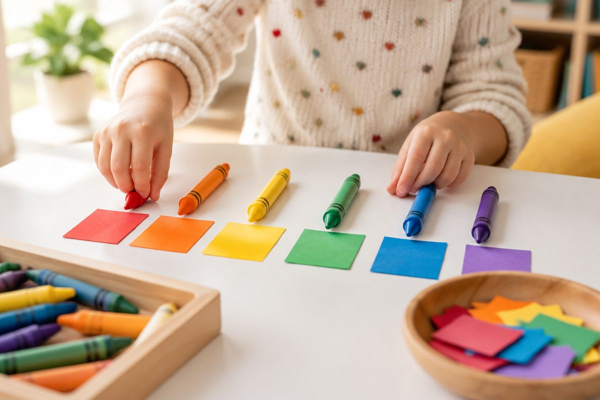

무지개 색깔을 중국어로 말해 볼까?

크레파스 상자를 열면 알록달록한 색이 가득하지요. 중국어 색깔 이름은 대부분 끝에 色(sè, 써)가 붙어서 규칙만 알면 쉽게 외울 수 있어요.
색깔 이름 끝에는 色가 붙어요
중국어로 '색깔'은 颜色(yánsè, 옌써)라고 해요.
색깔 이름은 대부분 '어떤 색' + 色(sè)로 만들어요. 色는 '색'이라는 뜻이에요. 우리말 '빨간색, 노란색'의 '색'과 같아요.
色(sè)의 e는 '으어'에 가깝게 읽어서 '써'처럼 들려요.
红(hóng) + 色(sè) = 红色(hóngsè, 훙써) 빨간색
빨강, 노랑, 파랑, 초록
빨간색은 红色(hóngsè, 훙써), 노란색은 黄色(huángsè, 황써)예요.
파란색은 蓝色(lánsè, 란써), 초록색은 绿色(lǜsè, 뤼써)예요. 绿의 ü는 입술을 동그랗게 모으고 '위'처럼 소리 내요.
红色와 黄色는 소리가 비슷하니 hóng(훙)과 huáng(황)을 잘 구별해요.
红色(hóngsè) / 黄色(huángsè) / 蓝色(lánsè) / 绿色(lǜsè)
흰색, 검은색 그리고 더 많은 색
흰색은 白色(báisè, 바이써), 검은색은 黑色(hēisè, 헤이써)예요. 판다는 白色와 黑色로 되어 있지요.
분홍색은 粉色(fěnsè, 펀써), 보라색은 紫色(zǐsè, 쯔써), 주황색은 橙色(chéngsè, 청써)예요.
중국에서 빨간색은 행운과 기쁨을 뜻해서, 설날에 빨간 봉투에 세뱃돈을 넣어 주고 빨간 장식을 많이 달아요.
白色(báisè) + 黑色(hēisè) / 粉色(fěnsè) / 紫色(zǐsè) / 橙色(chéngsè)
좋아하는 색을 말해요
'무슨 색이에요?'는 什么颜色？(shénme yánsè, 선머 옌써)라고 물어요. 什么(shénme)는 '무엇, 무슨'이에요.
좋아하는 색을 말할 때는 我喜欢…(wǒ xǐhuan…, 워 시환…)을 써요. 喜欢(xǐhuan)은 '좋아하다'예요.
친구에게 你喜欢什么颜色？(nǐ xǐhuan shénme yánsè, 니 시환 선머 옌써)라고 물으면 '너는 무슨 색을 좋아해?'라는 뜻이에요.
A: 你喜欢什么颜色？ 너는 무슨 색을 좋아해? / B: 我喜欢红色。(wǒ xǐhuan hóngsè, 워 시환 훙써) 나는 빨간색을 좋아해.
핵심 낱말
- 颜色
- yánsè(옌써). 색깔
- 色
- sè(써). 색깔 이름 끝에 붙는 '색'
- 什么
- shénme(선머). 무엇, 무슨
- 喜欢
- xǐhuan(시환). 좋아하다
꼭 알아야 할 표현
| 颜色 | 색깔 | yánsè (옌써) |
| 红色 | 빨간색 | hóngsè (훙써) |
| 黄色 | 노란색 | huángsè (황써) |
| 蓝色 | 파란색 | lánsè (란써) |
| 绿色 | 초록색 | lǜsè (뤼써) |
| 白色 | 흰색 | báisè (바이써) |
| 黑色 | 검은색 | hēisè (헤이써) |
| 粉色 | 분홍색 | fěnsè (펀써) |
| 紫色 | 보라색 | zǐsè (쯔써) |
| 橙色 | 주황색 | chéngsè (청써) |
| 什么颜色 | 무슨 색 | shénme yánsè (선머 옌써) |
| 我喜欢红色 | 나는 빨간색을 좋아해요 | wǒ xǐhuan hóngsè (워 시환 훙써) |
한 줄 정리
- 색깔은 颜色(yánsè)이고, 색 이름 끝에는 色(sè)가 붙어요.
- 红色 빨강, 黄色 노랑, 蓝色 파랑, 绿色 초록, 白色 흰색, 黑色 검정, 粉色 분홍, 紫色 보라, 橙色 주황이에요.
- 什么颜色？로 묻고, 我喜欢…으로 좋아하는 색을 말해요.